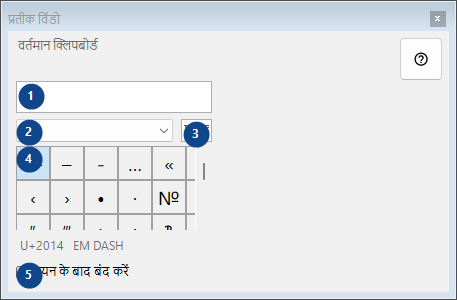
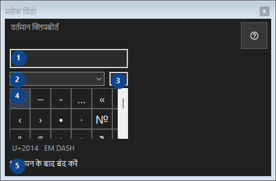

प्रतीक विंडो
इसका उपयोग
दुर्लभ प्रतीकों का पैलेट: क्लिक करने पर वर्ण क्लिपबोर्ड पर कॉपी हो जाता है; सब कुछ इसी कंप्यूटर पर रहता है।


उपयोग का क्रम
क्रमांकित विवरण पढ़ें, आवश्यक मान चुनें और विंडो के आदेश से आगे बढ़ें।
तत्व
1. वर्तमान क्लिपबोर्ड
वर्तमान क्लिपबोर्ड
आपके शॉर्टकट2. प्रतीक सेट
प्रतीक सेट
आपके शॉर्टकट3. प्रतीक खोजें
नाम, कीवर्ड या Unicode कोड से खोजें
आपके शॉर्टकट4. प्रतीक ग्रिड
U+2014 EM DASH
आपके शॉर्टकट5. चयन के बाद बंद करें
चयन के बाद बंद करें
आपके शॉर्टकट